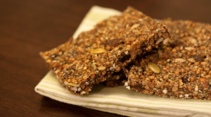

Finalmente consegui criar uma receita de barra de proteínas VEGANA!
Estou fazendo a versão com cobertura de chocolate e vou terminar as contas pra postar a receita.
A composição ficou melhor q as barras da VO2 ou TrioProtein.
A versão chocolate ganha uns 5 a 6gr de chocolate e 35kcals.
Barra de Proteína
Autor: Paru Vitu
Informações Nutricionais
- Porções: 25 a 30 barras
- Tamanho da Porção: 1 barra (25g)
- Calorias: 115
- Gordura: 2,92gr
- Carboidratos: 9,11gr
- Fibra: 1,34gr
- Proteína: 9,58gr
Tipo: Barra de Proteína
Cozinha: Vegan
Tempo de Preparo:
Tempo de Cozimento:
Tempo Total:

Ingredientes
- 125gr de quinoa em grão
- 100gr de farinha de aveia
- 100gr de amendoin torrado
- 100gr de granola moida
- 200gr de PIS.
- 2 colheres de sopa de óleo de linhaça
- 200ml de água
- Canela ou cacau em pó e adoçante para dar sabor (opcional)
- 150gr(01 barra) de chocolate vegano (opcional p/ cobertura)
Instruções
- Cozinha a quinoa até secar e reserve;
- No liquidificador coloque os amendois e a granola e triture até ficar um pó fino.
- Em uma vasilia grande:
- Coloque a quinoa e todos os ingredientes em pó, Misture, coloque o óleo e a água e amasse com as mãos até ficar homogeneo. Vá colocando canela/cacau, adoçando à gosto.
- Unte um assadeira retangular com oleo, coloque a massa espalhe por toda a assadeira e comprima bem, tente deixar o mais uniforme possivel.
- Com uma faca pequena corte as barras
- Asse em forno à 180º por 30min